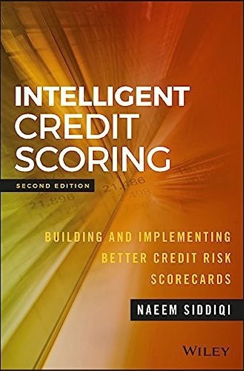
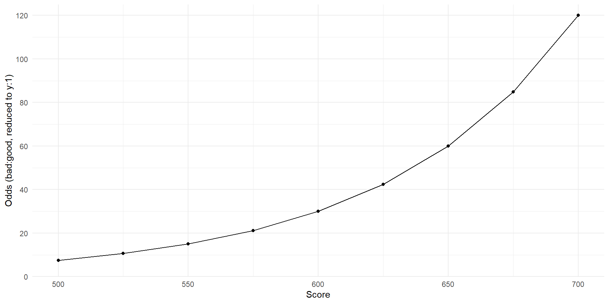
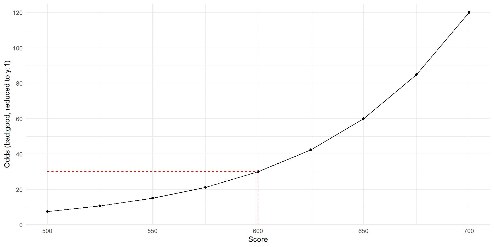
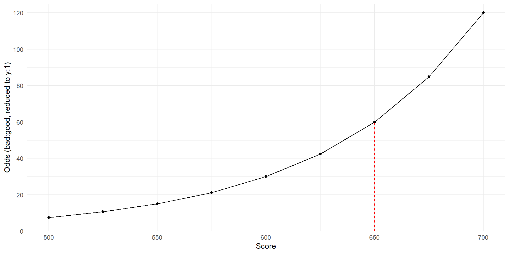
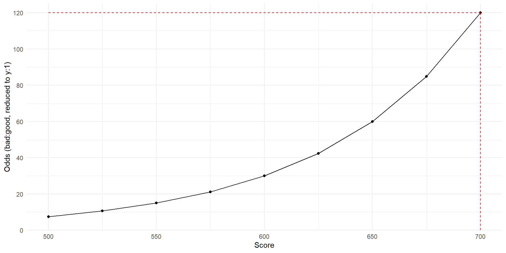
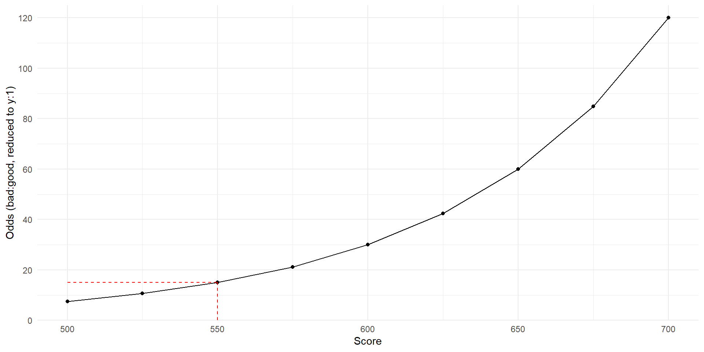

{KAscore}
The Breakthrough R Package for Scorecard Models
from Ketchbrook Analytics
What is {KAscore}?
- R package that contains a suite of functions for developing & managing credit scorecard models
- {KAscore} Website

Data Science in the Farm Credit System
- Modern tools call for modern solutions
PlatformSoftware as a Service- Let’s build together
Demo
Weight of Evidence
# Calculate the Weight-of-Evidence values for the
# "collateral_type" and "housing_status" variables
woe(
data = loans,
outcome = default_status,
predictors = c(collateral_type, housing_status)
)Weight of Evidence
# Instead of creating a "dictionary" of the unique WoE values,
# add the WoE values to the original data frame
woe(
data = loans,
outcome = default_status,
predictors = c(collateral_type, housing_status),
method = "add"
)Weight of Evidence
# Or we can replace the original independent variables with
# their WoE equivalents, via `method = "replace"`
woe(
data = loans,
outcome = default_status,
predictors = c(collateral_type, housing_status),
method = "replace"
)Information Value
iv(
data = loans,
outcome = default_status,
predictors = c(
amount_of_existing_debt,
collateral_type,
housing_status,
industry,
years_at_current_address
)
)Build a Scorecard
# Create our training data
train <- loans |>
woe(
outcome = default_status,
predictors = c(collateral_type, housing_status, industry),
method = "replace"
)Build a Scorecard
term estimate std.error statistic p.value signif
1 (Intercept) -0.8428400 0.07156796 -11.776778 5.142111e-32 ***
2 woe_collateral_type -0.7583238 0.22596292 -3.355966 7.908839e-04 ***
3 woe_housing_status -0.6740127 0.26206936 -2.571887 1.011460e-02 *
4 woe_industry -0.9763714 0.17616949 -5.542227 2.986482e-08 ***Target Points/Odds
Target Points/Odds
# A loan that scores 600 points has 30:1 odds of being "good"
# I.e., loans that score 600 points have a 97% probability of being "good",
# and a 3% probability of being "bad"
target_points <- 600
target_odds <- 30
# Every 50 points (+/-), the odds double (or halve):
growth_points <- 50
growth_rate <- 2Target Points/Odds
# A loan that scores 600 points has 30:1 odds of being "good"
# I.e., loans that score 600 points have a 97% probability of being "good",
# and a 3% probability of being "bad"
target_points <- 600
target_odds <- 30
# Every 50 points (+/-), the odds double (or halve):
growth_points <- 50
growth_rate <- 2
# Let's simulate a bunch of scores from 500 to 700 (by 25)
scores <- seq.int(from = 500, to = 700, by = 25)[1] 500 525 550 575 600 625 650 675 700Target Points/Odds
odds(
score = scores,
tgt_points = target_points, # 600
tgt_odds = target_odds, # 30
pxo = growth_points, # 50
rate = growth_rate # 2
)Target Points/Odds

Target Points/Odds

Target Points/Odds

Target Points/Odds

Target Points/Odds

Calculate the Points
- Weight-of-Evidence values for each class in each independent variable
- Model intercept and coefficients for each independent variable
- Target points/odds and scaling quantity/rate
Calculate the Points
- Weight-of-Evidence values for each class in each independent variable
Calculate the Points
- Model intercept and coefficients for each independent variable
Calculate the Points
- Target points/odds and scaling quantity/rate
# Add the points, creating the final scorecard
dict |>
dplyr::mutate(
points = points(
woe = woe,
estimate = coef,
intercept = params$value[params$variable == "(Intercept)"],
num_vars = length(params$variable[params$variable != "(Intercept)"]),
tgt_points = 600,
tgt_odds = 30,
pxo = 50,
rate = 2
)
)Calculate the Points
- Target points/odds and scaling quantity/rate
Calculate the Points
- Target points/odds and scaling quantity/rate
Score a New Loan Application
Imagine a new loan applicant comes through the door with the following characteristics:
Score a New Loan Application
Imagine a new loan applicant comes through the door with the following characteristics:
Score a New Loan Application
Imagine a new loan applicant comes through the door with the following characteristics:
Score a New Loan Application
Score a New Loan Application
Score a New Loan Application
applicant_odds <- odds(
score = 505,
tgt_points = 600,
tgt_odds = 30,
pxo = 50,
rate = 2
)
prob_good <- applicant_odds / (applicant_odds + 1)
prob_bad <- 1 - prob_good
paste0(
"Applicant's Probability of *Good*: ", round(prob_good, 3) * 100, "%\n",
"Applicant's Probability of *Bad*: ", round(prob_bad, 3) * 100, "%"
) |> cat()Applicant's Probability of *Good*: 88.9%
Applicant's Probability of *Bad*: 11.1%Using {KAscore} to Validate PD Rating “Models”
Scorecards & PD Rating Assignment Models
Example PD Rating Model
| Current_Ratio_Bin | Rating |
|---|---|
| [4.0, Inf) | 4 |
| [3.5, 4.0) | 5 |
| [3.0, 3.5) | 6 |
| [2.5, 3.0) | 7 |
| [2.0, 2.5) | 8 |
| [1.5, 2.0) | 9 |
| [1.0, 1.5) | 10 |
| [0.5, 1.0) | 11 |
| [0.0, 0.5) | 12 |
| [-0.5, 0.0) | 13 |
| [-0.5, -Inf) | 14 |
Unique Aspects of PD Rating Models
- PD Ratings (1-14) introduce an ordinal variable, which are used as an attempt to rank-order probability of default (which is a continuous variable)
- Any continuous independent variables (e.g., Current Ratio) become binned, categorical variables representing unique intervals
Validating PD Rating Models
How do we know that our bin breaks are correct/good?
{KAscore} can help
- Use
bin_quantile()to easily bin continuous variables - Use
iv()to evaluate predictiveness
Binning with bin_quantile()
Supposed we have the following raw data (a data frame called binning_data):
Binning with bin_quantile()
We can convert the continuous variable current_ratio to its binned, categorical equivalent using bin_quantile()
Binning with bin_quantile()
We can think of this as a PD Card:
Binning with bin_quantile()
We can then use iv() to evaluate this binned variable’s predictiveness:
Roadmap
- Enhancements & Community Calls
- Short-Term
- Monitoring functions
- Deployment examples (Docker)
- Auto-binning algorithm
- Long-Term
- Functionality/documentation for other types of models
- Community-driven enhancements